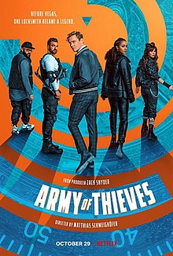

Clips
Thriller
Army of Thieves
{kind=link}
Army of Thieves is a 2021 heist comedy film directed by Matthias Schweighöfer from a screenplay by Shay Hatten, based on a story he wrote with Zack Snyder. A prequel to Army of the Dead, it is the second installment in the Army of the Dead franchise; the film stars Schweighöfer, who reprises his role as Ludwig Dieter, alongside a supporting cast that includes Nathalie Emmanuel, Ruby O. Fee, Stuart Martin, Guz Khan, and Jonathan Cohen. Filming began in Germany and the Czech Republic in October 2020, and concluded by December 2020. Army of Thieves was digitally released on October 29, 2021, on Netflix. It received generally postive reviews from critics who praised the performances of Schweighöfer and Emmanuel but criticized the plot for being unoriginal.
Thriller/Horror
Texas Chainsaw Massacre

The Texas Chain Saw Massacre is a 1974 American horror film produced and directed by Tobe Hooper from a story and screenplay by Hooper and Kim Henkel. It stars Marilyn Burns, Paul A. Partain, Edwin Neal, Jim Siedow and Gunnar Hansen, who respectively portray Sally Hardesty, Franklin Hardesty, the hitchhiker, the proprietor, and Leatherface. The film follows a group of friends who fall victim to a family of cannibals while on their way to visit an old homestead. The film was marketed as being based on true events to attract a wider audience and to act as a subtle commentary on the era's political climate; although the character of Leatherface and minor story details were inspired by the crimes of murderer Ed Gein, its plot is largely fictional.
Go back to Beats & Clips Page
Go back to Main Page